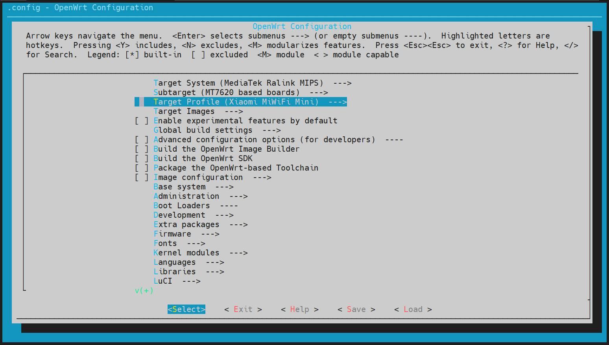
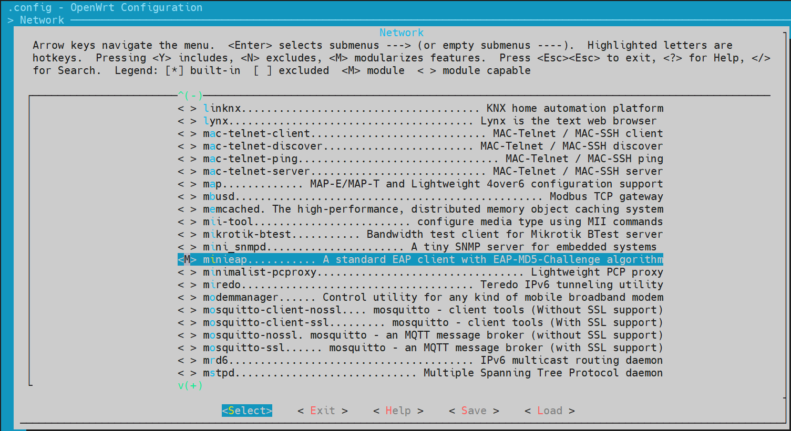

OpenWrt 手动编译 ipk
.ipk 文件
.ipk 文件是可以通过 OpenWrt 的包管理软件 opkg 直接安装，好比 .deb 文件与 apt 的关系。虽然官方的软件仓库已经很丰富了，但是有时仍然需要从源码编译一些第三方的软件使用，例如锐捷认证等
但是由于路由器平台通常与常用的服务器或者个人 PC 的处理器架构不同，并且路由器的处理器本身性能较弱，几乎不可能直接在路由器上进行编译生成 .ipk 文件，因此需要交叉编译来实现
而官方的 OpenWrt 仓库就提供了一个方便使用的交叉编译环境
编译准备
以 Debian / Ubuntu 为例，参考官网给出的要求，可以通过下面命令来进行安装依赖包
1 | sudo apt update |
安装/更新好这些依赖之后，就可以通过 git 拉取 OpenWrt 仓库了
1 | git clone https://git.openwrt.org/openwrt/openwrt.git |
通常由于仓库较大以及网速问题，可能会需要很久，其实可以通过 --depth 来限制拉取的仓库深度，或者通过镜像站来加速拉取，当然也可以两者同时采用
1 | git clone https://git.openwrt.org/openwrt/openwrt.git --depth=1 |
编译 .ipk 文件
更新 feeds
进入 openwrt 仓库后，首先需要更新软件包列表 feeds，它是在 OpenWrt 中共用位置的包的集合。运行以下命令即可更新内置软件包列表并链接到编译工具中：
1 | cd openwrt/ |
配置平台
1 | make menuconfig |
通常使用图形化菜单界面来进行配置编译选项，依次配置处理器架构、具体的处理器型号以及设备
以小米 mini 路由器为例，应该将他们配置成如下图所示

获取交叉编译链
这一步就是获取对应设备交叉编译所需的编译链
1 | make tools/install V=s -j$(grep processor /proc/cpuinfo | wc -l) |
V=s可以显示make过程中的所有输出，方便定位当前是否卡在了某一步骤上-j$(grep processor /proc/cpuinfo | wc -l)则是根据机器的 CPU 数量来进行多线程编译
添加需要编译的第三方软件包
可以先搜索有没有已经配置好的含有 Makefile 的仓库，有了适配过的 Makefile 文件就可以很方便的来编译源码生成 .ipk 文件了
以 minieap 为例，github 上有已经完成的仓库，依次可以直接拉取来编译
1 | git clone https://github.com/BoringCat/minieap-openwrt.git package/minieap |
在拉取完成仓库后，就可以再次配置编译选项，将需要编译成 .ipk 的功能配置成模块编译，也就是标记成 M
1 | make menuconfig |
对于 minieap 来说，在 Network 找到对应选项并配置成 M 即可，如下图

配置完成后就可以进行编译了，编译命令也很简单，以 minieap 为例如下所示
1 | make package/minieap/compile V=s -j$(grep processor /proc/cpuinfo | wc -l) |
编译完成后，.ipk 文件会生成在 ./bin/packages/<YourArchitecture>/base 目录下，将其拷贝到路由器上就可以通过 opkg 进行安装使用了